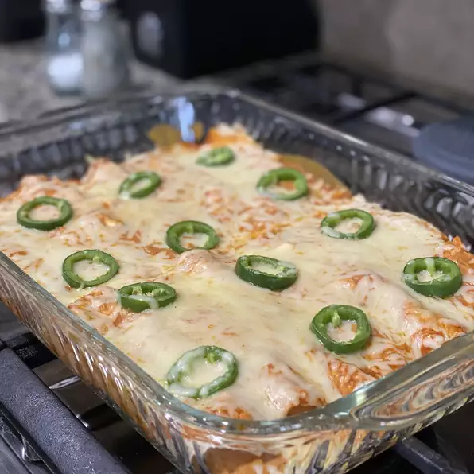

3-Cheese Enchiladas

Cheese enchiladas are perfect for a quick and easy dinner! Filled with three types of cheese, green onions, and salsa, these enchiladas are ready to eat in just 40 minutes. Switch up the flavor by using mild, hot, or fruity salsa, or even subbing enchilada sauce. My grandma gave me this recipe.
Ingredients
- 3 cups salsa, divided
- 1 (8 ounce) package cream cheese, softened
- 4 stalks green onions, chopped, divided
- 2 ½ cups Cheddar cheese, divided
- 2 ½ cups shredded Monterey Jack cheese, divided
- 12 (8 inch) flour tortillas
Steps !
- Preheat the oven to 350 degrees F (175 degrees C).
- Mix 2 cups salsa, cream cheese, and 1/2 of the green onions in a bowl until thoroughly combined. Add 2 cups Cheddar cheese and 2 cups Monterey Jack cheese and lightly stir to combine.
- Spoon a scant 1/2 cup of cheese filling in a line down the center of each tortilla. Roll tortillas around the filling. Place enchiladas, seam-side down, in a 9x13-inch baking dish.
- Spread remaining 1 cup salsa over the tops of the enchiladas.
- Lightly mix remaining 1/2 cup Cheddar and 1/2 cup Monterey Jack in a bowl. Sprinkle cheese mixture over the enchiladas then scatter remaining green onions over top. Cover the dish with aluminum foil.
- Bake in the preheated oven until cheese is melted and bubbly, about 20 minutes.